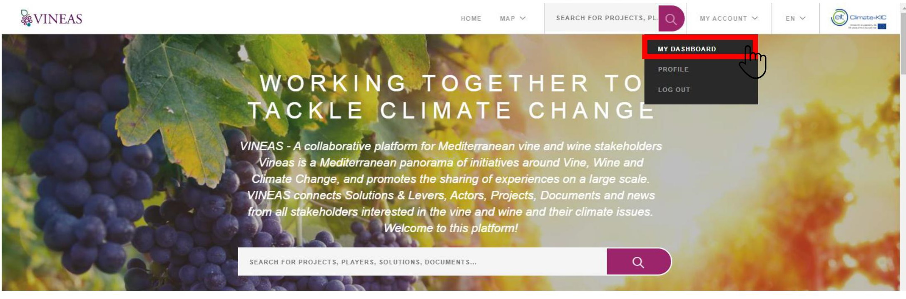
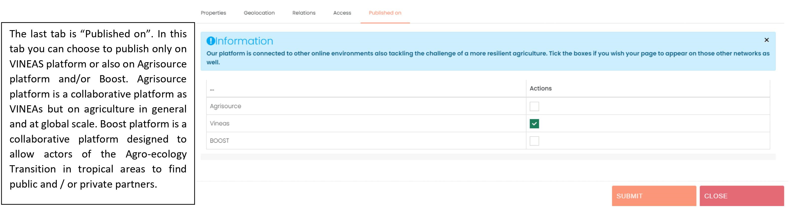

Vineas User Documentation
How to register?
Click on the “LOGIN” tab and then, click on “Registration”.
Fill the questionnaire.
Submit. Then, you will receive a confirmation email for your registration. As soon as an administrator accept your registration, you will receive an email with your ID and password. The ID and password are personal information.
How to login?
Click on “Log in” in the LOGIN tab.
Fill your email address and password you received by email.
And submit.
First steps in your dashboard
The following figure describes the different fields that you have in your dashboard.
After clicking to access to one type of content, you access to the following page (example for document page).

How to add content?
To add content you need to have an “User” account and to log in. Then, you click on “My dashboard” on “My account” tab. 
You can find Help in the “?” big button. To add an Actor page, you need to click on “->” button in the Actor line.
Here are all the “Actors” pages that I added (here any actor has been added with this account).To add a new Actor page, you just need to click on “Add new”
The second tab is the geolocation tab for the address of the actor or project. This tab is important because allows to appear on the geolocation map of the network.
The third tab is the “Access”. This tab allows you to give the rights to another user registered on the platform.

Finally, you can submit your content.
The process is the same for the other types of content: documents, projects, solutions, events and news.
How to make relations for the network map?
To create the relationship in the network map you just need to fill the items related to the other contents already saved on the platform. The relations are automatically created.
How to translate my uploaded content?
When you add a new content, at the beginning of the questionnaire you can see the current version, the language that you are using. If you want to add the content in another language you just need to change the current version language.
If you want to add a content in 2 (or more) languages, you need:
- To complete the questionnaire in a first language
- To submit
- At this step your content is saved and available in your dashboard
- Then to click to modify the saved content that you want to translate
- To change the current version language in the “current version” field (see the figure below) by the language in which you want to translate your content
- To translate the content
- And to submit.
Repeat the process if you want to translate your content in an additional language.

How to give the rights to someone else?
The third tab when you add content is the “Access” tab. This tab allows you to give the rights to another user registered on the platform. You just need to search his/ her name. Then, you click on the “V” if you want to give all the rights to this user. You can click to the pen only to select some rights. When you are done with this step, don’t forget to submit to save your modification.
You can also cancel the rights given to someone by clicking on the padlock in the line of the person.
I would like to become the referent of one page
A page is my institution, or I am involved in one project, the page exists but there is no referent. Send an email to contact@vineas.net to request the rights to modify this page.
Other questions?
If you have other questions, you can send an email at contact@vineas.net and we will answer as soon as possible.